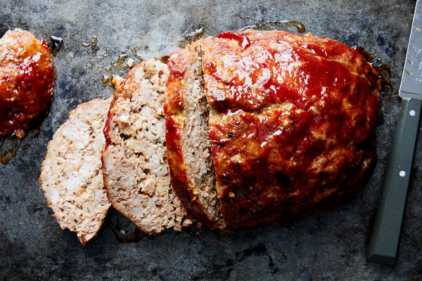

Meatloaf |
|
YIELD - 6 to 8 servings (2 loaves) TIME - 1 1/2 hours Originally created as a tasty way to use up leftover vegetables and to stretch meat further during lean times, meatloaf has become the ultimate comfort food. This one is a classic version, blending ground beef, pork and veal with simple pantry seasonings, but you should feel free to use your preferred combination of meat, such as half pork and half beef. Milk-soaked bread ensures a tender meatloaf, and baking it freeform — on a baking sheet instead of a loaf pan — provides more surface area for the tangy-sweet tomato glaze to caramelize as it bakes. Leftover slices can be crisped in a skillet and served with a salad or tucked into a sandwich. Alternatively, freeze one uncooked loaf for the next time you need to put dinner on the table with ease; simply thaw the night before and bake as directed. |
 |
|
Step 1
Make the meatloaf: Heat oven to 350 degrees and grease a rimmed baking sheet with oil. Heat 2 tablespoons oil in a medium skillet over medium. Add onion and cook, stirring occasionally, until softened, about 5 minutes. Add garlic and cook, stirring, until fragrant, about 2 minutes. Stir in tomato paste until well combined; let cool. Step 2
In a large bowl, combine bread and milk, and mash with a spoon until a paste forms. Add eggs, parsley, salt, pepper, thyme and cooled onion mixture and mix until well blended. Add the beef, pork and veal, and mix gently to combine, being careful not to overwork the meat. Divide mixture into 2 equal portions and shape each into a 4-by-8-inch meatloaf on the prepared baking sheet. Step 3
Make the glaze: In a small bowl, whisk together ketchup and Worcestershire sauce until smooth. Use a spoon to spread mixture over the top and sides of each meatloaf. Bake until nicely browned and an instant-read thermometer inserted in the center of meatloaf registers 160 degrees, 45 to 55 minutes. Let rest for 15 minutes before slicing. |
|